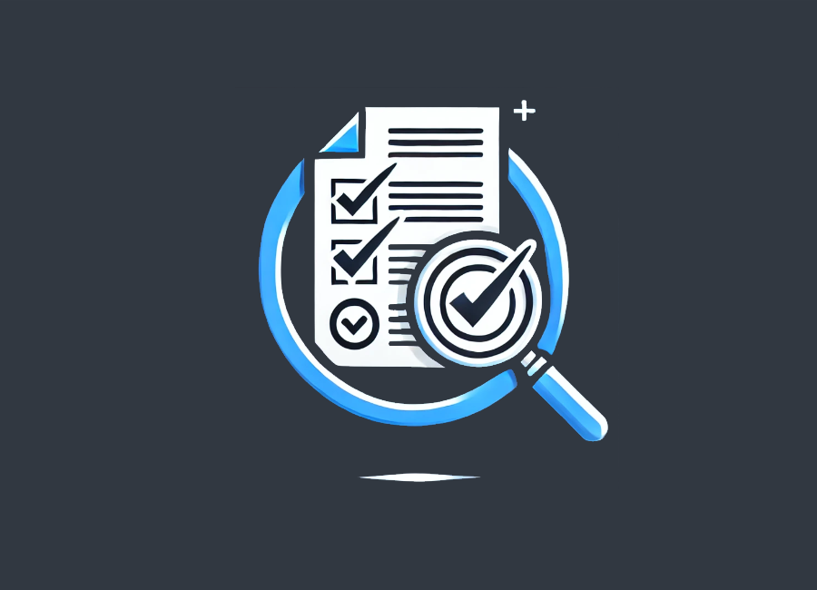

Our Programs

Training for Trainers
The Training of Trainers (ToT) model is intended to engage master trainers in coaching new trainers that are less experienced with a particular topic or skill or with training overall. The intensive training for cyber security trainers programme starts every year in September.
Fact Check
Cyberity's Fact Check program fights misinformation by verifying suspected hoaxes. Anyone could submit questionable content via our link or share it on our Facebook Forum ( https://www.facebook.com/groups/fafhh/) for crowdsourced fact-checking. We only debunk false facts, not opinions, respecting Freedom of Speech.
Data Protection Advocacy
Raise public awareness and build a data advocacy toolkit that provides an overview of the legal standards concerning the right to privacy and personal data protection and offers a set of practical tools for stakeholders in the formulation and implementation of data protection frameworks.
Press Release
Cybersecurity challenges have been increasing due to the massive digital incidents. Meanwhile, on the other hand, there are not many who are capable of tackling these issues. Together with the media, we are raising awareness by delivering regular press releases on current situations.
Digital Incident
One of our programmes is an emergency digital incident helpline for journalists and the pro-democracy movement. Currently, we are in the process of building a system for providing assistance for digital incidents in emergency situations.
AI ethics
Campaign on AI ethics law and regulation. Regarding AI, it presents new ethical challenges for political and advocacy campaigns. We are encouraging all stakeholders to understand how critical it is to regulate AI ethics and law.